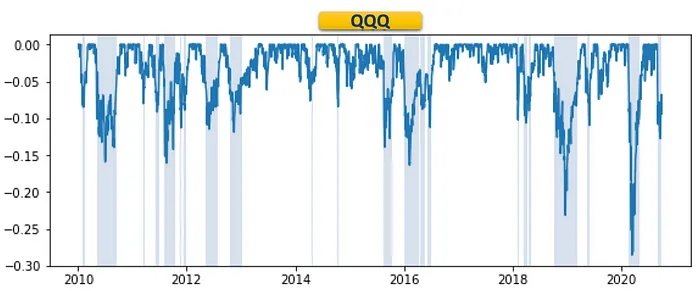
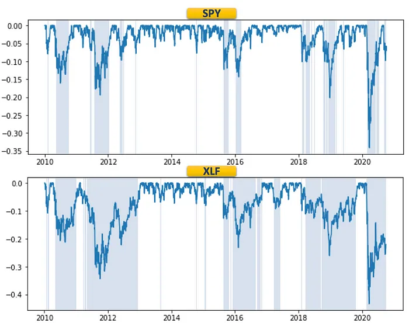
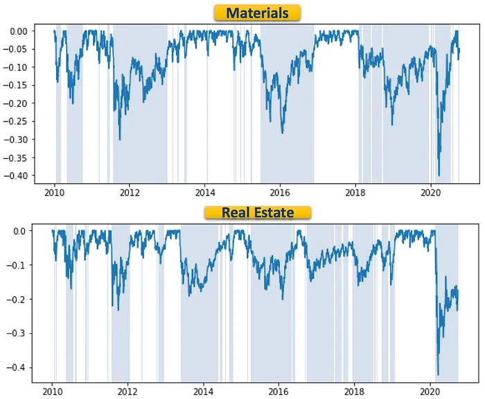

A drawdown measures the distance (in %) of the portfolio value from its peak, reflecting its downside risk. If a portfolio had previously reached a peak of $100 and subsequently dropped to $90, then the portfolio experienced a 10% drawdown.
Drawdown risk is relevant to all stocks and portfolios. Investor should care about not only the magnitudes of drawdowns but also their durations.
We examine the drawdown risk sector by sector through a series of Sector ETFs. As we see below, drawdown risk may vary greatly across sectors.
As a comparison, we look at the drawdown charts for the QQQ ETF, S&P500 ETF (SPY) and the Financial Sector ETF (XLF). It’s visible that XLF tends to take longer to recover to previous peaks than SPY.


Other sectors that have shown higher drawdown risk include Materials (XLB) and Real Estate (IYR).

Extreme drawdown risk can be seen in the Biotech (XBI) and Energy (XLE) sectors.
Originally published on openexa.com, Oct 8, 2020. A summary of work first published on medium.com.
The original on medium.com